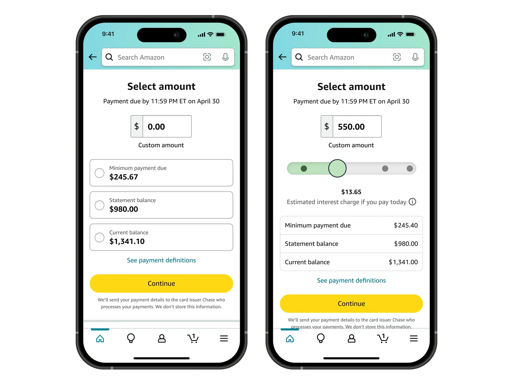

Amazon Visa Pay Bill
Late fees were pushing customers to close their accounts. I designed the payment experience for Amazon's first in-house card management, including a slider that priced paying less than the full balance. It won an Amazon Inventor Award.
23%Fewer late fees, against a 20% goal
21%Less attrition
View case study
